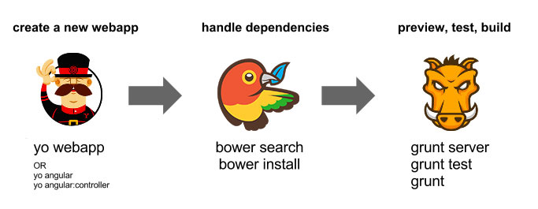
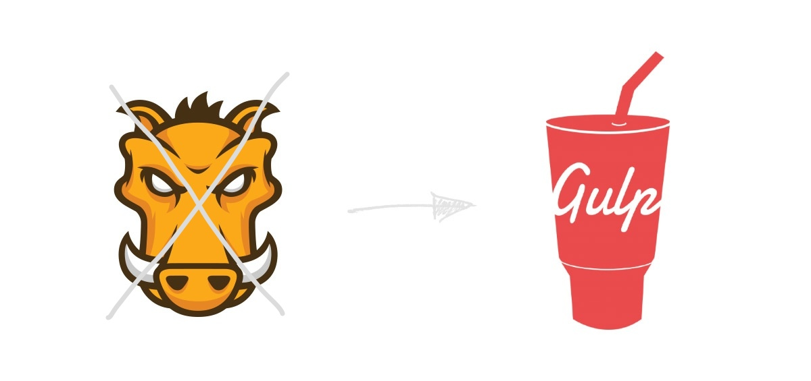

class: center, middle .title[ Grunt vs. Gulp ] .subsubtitle[ Evoluce build systémů ] .vertical-spacer[ ] # Tomáš Holas .vertical-spacer[ ] <img src="logo-socialbakers.jpg" width="30%"> --- name: inverse layout: true class: center, middle, inverse --- # The History --- layout: false .left-column[ ## History ### - Vanilla everything ] .right-column.center.middle[ <img class="move-left" src="meditation.jpg" width="70%"> ] --- .left-column[ ## History ### - Vanilla everything ### - Preprocessors ] .right-column[ ## HAML ```haml !!! %html %head %title BoBlog %meta{"http-equiv" => "Content-Type", :content => "text/html"} %link{"rel" => "stylesheet", "href" => "main.css", "type" => "text/css"} %body #header %h1 BoBlog %h2 Bobs Blog #content - @entries.each do |entry| .entry %h3.title= entry.title %p.date= entry.posted.strftime("%A, %B %d, %Y") ``` ## SASS ```sass $font-stack: Helvetica, sans-serif $primary-color: #333 body font: 100% $font-stack color: $primary-color ``` ] --- .left-column[ ## History ### - Vanilla everything ### - Preprocessors ### - Bash scripts ] .right-column[ ## Command line tools ```bash coffee --watch --compile --output lib/ src/ sass --watch app/sass:public/stylesheets jade --watch foo bar --out /tmp ``` ## Example script ```bash #!/bin/bash # Make sure that the 'sass' command exists command -v sass >/dev/null 2>&1 || { echo >&2 "SASS not available. Unable to re-compile stylesheets"; exit 1; } # Define our paths and stylesheets echo "Re-compiling stylesheets..." cd wp-content/themes/grunwell2012/css/ sass style.scss style.css --style compressed echo "style.scss -> style.css (compressed)" sass ie8.scss ie8.css --style compressed echo "ie8.scss -> ie8.css (compressed)" echo "Sassification is complete" exit 0 ``` ] --- .left-column[ ## History ### - Vanilla everything ### - Preprocessors ### - Bash scripts ### - Makefiles ] .right-column[ ## CoffeeScript's cakefile ```coffeescript task 'watch', 'Watch prod source files and build changes', -> invoke 'build' util.log "Watching for changes in src" for file in appFiles then do (file) -> fs.watchFile file, (curr, prev) -> if +curr.mtime isnt +prev.mtime util.log "Saw change in #{file}" grrrr 'Whoa. Saw a change. Building. Hold plz.' invoke 'build' task 'build', 'Build single application file from source files', -> invoke 'coffeeFiles' appContents = new Array remaining = appFiles.length for file, index in appFiles then do (file, index) -> fs.readFile file, 'utf8', (err, fileContents) -> throw err if err appContents[index] = fileContents process() if --remaining is 0 process = -> fs.writeFile 'public/app.coffee', appContents.join('\n\n'), 'utf8', (err) -> throw err if err exec 'coffee --compile public/app.coffee', (err, stdout, stderr) -> if err util.log 'Error compiling coffee file.' grrrr 'Uh, your coffee is bad.' ``` ] --- .left-column[ ## History ### - Vanilla everything ### - Preprocessors ### - Bash scripts ### - Makefiles ### - Framework support ] .right-column[ ## Asset pipeline ### CSS ```css /** * application-all.css * *= require_self *= require_tree ./all */ ``` ### Javascript ```javascript //= require jquery //= require jquery_ujs //= require jquery-ui //= require_directory ./ //= require_tree ./public ``` ### ERB ```erb <%= stylesheet_link_tag "application", media: "all" %> <%= javascript_include_tag "application" %> ``` ] --- template: inverse # The Grunt Era --- class: center # Grunt: Industry standard .vertical-spacer[ ]  --- .left-column[ ## Grunt Howto ### - Installation ] .right-column[ ## Global Grunt ```bash $ npm install -g grunt-cli ``` ## package.json ```javascript { "name" : "SampleGrunt", "version" : "0.1.0", "author" : "Brandon Random", "devDependencies" : { "grunt" : "~0.4.0", "grunt-contrib-concat": "*", "grunt-contrib-uglify": "*", "grunt-contrib-watch": "*", } } ``` ## Install packages ```bash $ npm install ``` ] --- .left-column[ ## Grunt Howto ### - Installation ### - Basic configuration ] .right-column[ ## Gruntfile.js ```javascript module.exports = function(grunt) { // All configuration goes here grunt.initConfig({ // Read info from package file pkg: grunt.file.readJSON('package.json'), concat: { dist: { src: [ 'js/libs/*.js', // All JS in the libs folder 'js/global.js' // This specific file ], dest: 'js/build/production.js', } } }); // Load task from plug-in. grunt.loadNpmTasks('grunt-contrib-concat'); // Register default command grunt.registerTask('default', ['concat']); }; ``` ] --- .left-column[ ## Grunt Howto ### - Installation ### - Basic configuration ### - Multiple tasks ] .right-column[ ```javascript module.exports = function(grunt) { grunt.initConfig({ pkg: grunt.file.readJSON('package.json'), * concat: { dist: { src: ['src/**/*.js'], dest: 'dist/<%= pkg.name %>.js' } }, * uglify: { dist: { files: { 'dist/<%= pkg.name %>.min.js': ['<%= concat.dist.dest %>'] } } }, * qunit: { files: ['test/**/*.html'] }, * jshint: { files: ['Gruntfile.js', 'src/**/*.js', 'test/**/*.js'], }, * watch: { files: ['<%= jshint.files %>'], tasks: ['jshint', 'qunit'] } }); grunt.loadNpmTasks('grunt-contrib-concat'); // other tasks omitted grunt.registerTask('test',['jshint','qunit']); grunt.registerTask('default',['jshint','qunit','concat','uglify']); }; ``` ] --- template: inverse # Case Study ! --- class: mega-grunt # "Enterprise" Gruntfile -- .bottom-right[ ] --- class: grunt-gulp .move-top[ # Gulp to the rescue! ] .pull-left[ ## Grunt ```javascript grunt.initConfig({ * jade: { compile: { files: [ { cwd: "templates", src: "**/*.jade", dest: "build/templates", ext: ".html" }]}}, * coffee: { compile: { files: { 'build/app.js':"scripts/**/*.coffee" }}}, * watch: { templates: { files: ["**/*.jade"], tasks: ['jade'] }}}); grunt.registerTask('compile', ['jade', 'coffee']); grunt.registerTask('default', ['compile', 'watch']); ``` ] .pull-right.move-bottom[ ## Gulp ```javascript var gulp = require('gulp'); var jade = require('gulp-jade'); var coffee = require('gulp-jade'); var concat = require('gulp-concat'); *gulp.task('jade', function() { gulp.src('pages/**/*.jade',{base:'./pages'}) .pipe(jade()) .pipe(gulp.dest('build/pages')); }); *gulp.task('coffee', function() { gulp.src('./scripts/*.coffee') .pipe(coffee({bare: true})) .pipe(concat('app.js')) .pipe(gulp.dest('./build')); }); gulp.task('compile', ['jade','coffee']); *gulp.task('watch', ['compile'], function() { gulp.watch('pages/**/*.jade',['compile']); }); gulp.task('default', ['watch']); ``` ] --- # gulp.task .huge-text.move-bottom[ ```javascript // Create task gulp.task('name', ['deps'], function(done) { return stream || promise; // ...or, call done() }); ``` ] --- # gulp.watch .huge-text.move-bottom[ ```javascript // Runs tasks when files change gulp.watch('src/**/*.js', ['test', 'compile']); ``` ] --- # gulp.src .huge-text.move-bottom[ ```javascript // Returns a readable stream gulp.src(['src/**/*.js', 'test/spec/**/*.js']) ``` ] --- # gulp.dest .huge-text.move-bottom[ ```javascript // Returns a "through stream" gulp.src('src') .pipe(...) .pipe(gulp.dest('dist')); ``` ] --- class: center, middle # task, watch, src, dest .move-bottom-slight[ ] --- template: inverse # Let's get (our hands) dirty --- class: center .move-top[ # Tempfiles? Streams! ] ## Grunt <img width="70%" src="grunt-flow.png"> ## Gulp --- .pull-left.move-top[ ## Grunt ```javascript grunt.initConfig({ sass: { dist: { files: [{ cwd: 'app/styles', src: '**/*.scss', dest: '../.tmp/styles', expand: true, ext: '.css' }] } }, autoprefixer: { options: ['last 1 version'], dist: { files: [{ expand: true, cwd: '.tmp/styles', src: '{,*/}*.css', dest: 'dist/styles' }] } }, watch: { styles: { files: ['app/styles/{,*/}*.scss'], tasks: ['sass:dist','autoprefixer:dist'] } } }); grunt.registerTask('default', ['styles','watch']); ``` ] .pull-right.move-top[ ## Gulp ```javascript gulp.task('sass', function () { gulp.src('app/styles/**/*.scss') .pipe(sass()) .pipe(autoprefixer('last 1 version')) .pipe(gulp.dest('dist/styles')); }); gulp.task('default', function() { gulp.run('sass'); gulp.watch('app/styles/**/*.scss', function() { gulp.run('sass'); }); }); ``` ] --- .move-top[ # Serial Join ] .pull-left[ ] .pull-right[ ```javascript var gulp = require('gulp'); var streamqueue = require('streamqueue'); var less = require('gulp-less'); var cssimport = require('gulp-cssimport'); var autoprefier = require('gulp-autoprefixer'); gulp.task('css', function(){ return streamqueue({ objectMode: true }, gulp.src('./css/src/first.less') .pipe(less()), gulp.src('./css/src/second.css') .pipe(cssimport()) .pipe(autoprefixer('last 2 versions'))) .pipe(concat('app.css')) .pipe(minifyCss()) .pipe(gulp.dest('./css/'))}); ``` ] --- .move-top[ # Async Streams ] .pull-left[ ] .pull-right[ ```javascript var gulp = require('gulp'); var merge = require('merge-stream'); var less = require('gulp-less'); var autoprefixer = require('gulp-remember'); gulp.task('css', function(){ return merge( gulp.src('./css/src/first.less') .pipe(less()) .pipe(gulp.dest('./css/')), gulp.src('./css/src/second.css') .pipe(autoprefixer()) .pipe(gulp.dest('./css/')) ); });``` ] --- .move-top[ # Stream Array ] .pull-left[ ] .pull-right[ ```javascript var gulp = require('gulp'); var streamqueue = require('streamqueue'); var less = require('gulp-less'); var cssimport = require('gulp-cssimport'); var autoprefier = require('gulp-autoprefixer'); gulp.task('css', function(){ return streamqueue({ objectMode: true }, gulp.src('./css/src/first.less') .pipe(less()), gulp.src('./css/src/second.css') .pipe(cssimport()) .pipe(autoprefixer('last 2 versions'))) .pipe(concat('app.css')) .pipe(minifyCss()) .pipe(gulp.dest('./css/'))}); ``` ] --- # Gulp rewrite results --- template: inverse # The Future --- # Gulp future ## Drop Orchestrator ```javascript gulp.task('js', ['clean'], function() {...}) gulp.task('css', ['clean'], function() {...}) gulp.task('img', ['clean'], function() {...}) gulp.task('compile', ['js','css', 'img']); gulp.task('watch', ['compile'], function() {...}) gulp.task('default', ['watch']); ``` ## Use Bach ```javascript gulp.task('default', gulp.series( 'clean', gulp.parallel('js', 'css', 'img'), 'watch' )); ``` --- # Grunt future ## We will do everything Gulp is doing... -- but worse .pull-left[ ```bash https://github.com/gruntjs/grunt-next ``` ] .pull-right[ <br> ] --- class: bullets .pull-left[ ] .pull-right[ <img class="center" height="200px" src="gulp-logo.png"> ] -- .pull-left.bigger-text[ * Task runner ] .pull-right.bigger-text[ * Build system ] -- .pull-left.bigger-text.move-top[ * Configuration over code ] .pull-right.bigger-text.move-top[ * Code over configuration ] -- .pull-left.bigger-text.move-top[ * Filesystem based ] .pull-right.bigger-text.move-top[ * Stream based ] -- .pull-left.bigger-text.move-top[ * "Kitchen sink" ] .pull-right.bigger-text.move-top[ * Unix-like ] -- .pull-left.bigger-text.move-top[ * 3600+ plugins ] .pull-right.bigger-text.move-top[ * 700+ plugins ] -- .pull-left.bigger-text.move-top[ * Might be dead soon ] .pull-right.bigger-text.move-top[ * Bright future :) ] ??? Grunt je mrtvá evoluční větev, Gulp je budoucnost Můžeme s tím nesouhlasit, můžeme proti tomu protestovat, ale to je tak všechno, co s tím můžeme dělat. --- class: center .move-bottom[  ]